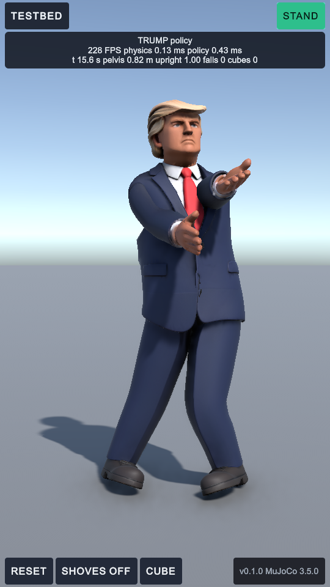
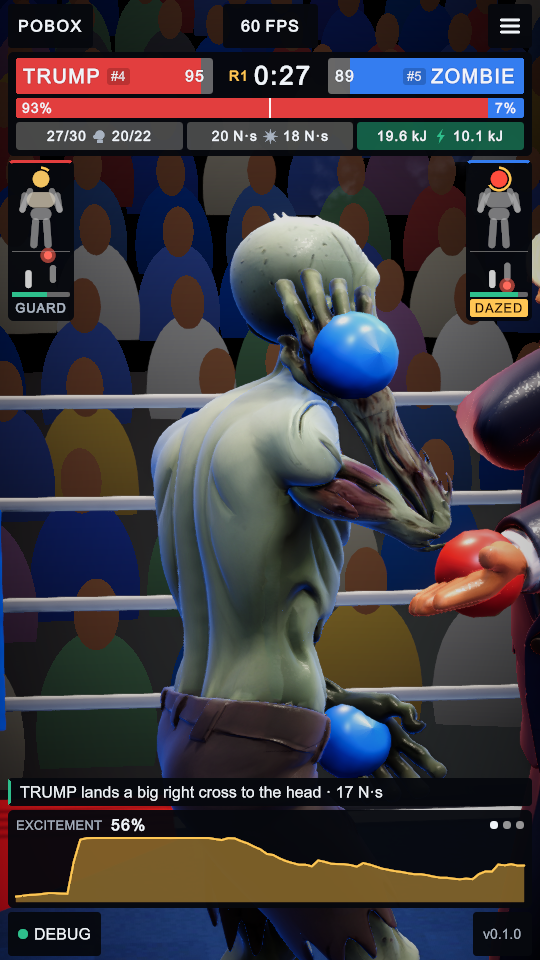
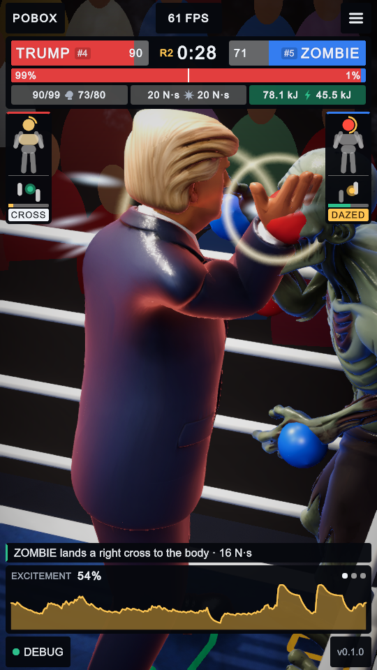
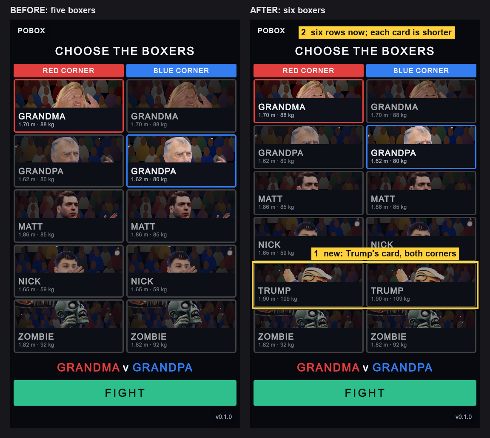

Trump in the game: what I saw
3 October 2026, 18:10 to 18:30 · Unity 6000.6, played in the editor after his training ended · screenshots at 540 by 960
In short. The new Trump works in all three scenes. He stands, walks and turns in the Testbed without falling; he boxes Zombie in the Arena, was knocked down on command, got up in about four seconds and carried on; and he has a card in the menu. The Unity gate passes for all six boxers. Two things do not look right yet: his open hands stick out past his gloves, and his menu card shows hair and brow more than face.
Testbed: stand, walk, turn

| What I asked | What he did | |
|---|---|---|
| Stand 22 s with shoves, then a thrown cube | 0 falls; pelvis held at 0.81 to 0.82 m | good |
| Walk forward at 0.6 m/s | 3.75 m in 6.4 s, which is 0.59 m/s; 0 falls | good |
| Turn to an opponent directly behind | facing them 2.6 s later; 0 falls | good |
| Cost on this laptop | physics 0.13 ms and policy 0.43 ms a step, over 200 frames a second | good |
The Testbed's camera does not follow a walking boxer, so the walk screenshot shows an empty floor; that is the scene, not Trump.
Arena: a bout with Zombie


| Moment | What happened |
|---|---|
| First 40 s | Trump landed 53 of 56, Zombie 45 of 48; neither fell |
| By 1 min 30 s | Trump 119 landed and 2 knockdowns scored; Zombie 101 landed and down twice |
| Knockdown on command | pelvis at 0.31 m at the count of 2, 0.61 m at 4, standing (0.84 m) at 6; the bout resumed |
| Next 10 s | stayed on his feet and kept boxing |
| Stamina | the game's stamina bar fell to 0.12 by the middle of round two, lower than Zombie's 0.40 |
Menu: before and after

1. Trump's card is new in both corners' columns, with his size (1.90 m, 109 kg) and a portrait taken in the ring. 2. Six rows fit where five did, so every card is shorter. The layout audit reports 78 elements, none off screen, clipped or too small.
Unity gate (Unity against plain C MuJoCo 3.5.0)
| Test for Trump | Unity | C MuJoCo | |
|---|---|---|---|
| Replay of 250 recorded observations | largest action difference 5.7e-06 (must be under 1e-4) | pass | |
| 5 s walk: on his feet | whole 5 s | whole 5 s | pass |
| Cadence, footfalls a second | 3.60 | 3.60 | pass |
| Torque (RMS) | 64.33 N m | 64.30 N m | pass |
| Ground covered | 2.943 m | 2.943 m | pass |
| 25 episodes with a shove and a cube: on the floor at the end | 0% | 0% | pass |
All 18 gate tests pass (three for each of six boxers). This is the first gate run with the speed limit applied in Unity, so the rule behaves the same on both sides.
What does not look right yet
| Hands past the gloves | His mesh has open hands, and the glove is a ball at the wrist, so his fingers show beyond it. Zombie's do the same. Closing the hands into fists in Blender, or hiding the hand under the glove, would fix it. |
| Menu portrait | The card's crop lands on his hair and brow; most of his face is below the cut. His head is larger than the others', so he needs the crop set lower. |
| Attack exam | 0.37 punches a second across all opponents (needs 0.5). He lands freely on Zombie and Nick and almost never on Matt, Grandma or Grandpa. The bout above was against Zombie, his best match-up. |
| Not watched | I played him only against Zombie in the Arena. I did not watch him against the three he struggles with. |